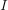
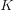

Layers¶
-
class
slugnet.layers.Dense(ind, outd, activation=<slugnet.activation.Noop object>, init=<slugnet.initializations.GlorotUniform object>)[source]¶ Bases:
slugnet.layers.LayerA common densely connected neural network layer.
The
Denselayer implements the feed forward operation![\[
\bm{a} = \phi(\bm{W}^T \bm{x} + \bm{b})
\]](_images/math/7cafe553d169f705c18559a9e09fbfa481a015e5.svg)
where
 is activated output,
is activated output,  is the activation function,
is the activation function,  are weights,
is our bias.
are weights,
is our bias.On feed backward, or backpropogation, the
Denselayer calculates two values as follows![\begin{flalign}
\frac{\partial \ell}{\partial \bm{a}^{(i)}} &=
\Big[ \bm{W}^{(i + 1)^T}
\frac{\partial \ell}{\partial \bm{a}^{(i + 1)}}\Big]
\circ \phi'(\bm{a}^{(i)}) \\
\frac{\partial \ell}{\partial \bm{W}^{(i)}} &=
\frac{\partial \ell}{\partial \bm{a}^{(i)}} \bm{x}^T
\end{flalign}](_images/math/5c2680bc4b8caeb1698eaa50c3ca1dc90b6632e0.svg)
When looking at the source, there is a notable absence of
 and
and  .
This is because their dot product is calculated in the previous layer.
The model propogates that gradient to this layer.
.
This is because their dot product is calculated in the previous layer.
The model propogates that gradient to this layer.Parameters: - ind (int) – The input dimension at this layer.
- outd (int) – The output dimension at this layer.
- activation (slugnet.activation.Activation) – The activation function to be used at the layer.
- init (slugnet.initializations.Initializer) – The initialization function to be used
-
class
slugnet.layers.Dropout(p=0.0, *args, **kwargs)[source]¶ Bases:
slugnet.layers.LayerDropout is a method of regularization that trains subnetworks by turning off non-output nodes with some probability
 .
.This approximates bagging, which involves training an ensemble of models to overcome weaknesses in any given model [1]_.
We can formalize dropout by representing the subnetworks created by dropout with a mask vector . Now, we note each subnetwork defines a new probability distribution of
 as
[1]_. If we define
as
[1]_. If we define
 as the probability distribution of mask vectors
, we can write the mean of all subnetworks as
as the probability distribution of mask vectors
, we can write the mean of all subnetworks as![\[
\sum_{\bm{\mu}} \mathds{P}(\bm{\mu}) \mathds{P}(y | \bm{x}, \bm{\mu}).
\]](_images/math/f7d65edfc282dc4351e1169855a6ecedadf571b8.svg)
The problem with evaluating this term is the exponential number of mask vectors. In practice, we approximate this probability distribution by including all nodes during inference, and multiplying each output by , the probability that any node is included in the network during training. This rule is called the weight scaling inference rule [1]_.
Parameters: p (float) – The probability of a non-ouput node being removed from the network. [1] Goodfellow, Bengio, Courville (2016), Deep Learning, http://www.deeplearningbook.org
-
class
slugnet.layers.Convolution(ind, nb_kernel, kernel_size, stride=1, init=<slugnet.initializations.GlorotUniform object>, activation=<slugnet.activation.ReLU object>)[source]¶ Bases:
slugnet.layers.LayerA layer that implements the convolution operation.
In the general case, a discrete convolution operation implements the function:
![\[s(i) = \sum_{a=-\infty}^\infty x(a) w(i - a)\]](_images/math/b785a0d6cfc7114705adac1dc8a868b188f7c75e.svg)
where
 is the input and
is the input and  is the kernel, or in some cases the weighting function.
is the kernel, or in some cases the weighting function.In the case of convolutional neural networks, the input is typically two dimensional image , and it follows that we have a two dimensional kernel . Now we can write out convolution function with both axes:
![\[S(i, j) = \sum_m \sum_n I(m, n) K(i - m, j - n).\]](_images/math/5fe607911c726afc17d064f98616b2ad916850b6.svg)
Note that we can write the infinite sum over the domains of and
 as discrete sums because we assume
that the kernel is zero everywhere but the set of
points in which we store data [1]_.
as discrete sums because we assume
that the kernel is zero everywhere but the set of
points in which we store data [1]_.The motivation for using the convolution operation in a neural network is best described using an example of an image. In a densely connected neural network, each node at layer
 is connected to every node at layer
is connected to every node at layer
 . This does not lend itself to image processing,
where location of a shape relative to another shape is
important. For instance, finding a right angle involves
detecting two edges that are perpendicular, and whose
lines cross one another. If we make the kernel smaller
than the input image, we can process parts of the image
at a time, thereby ensuring locality of the input signals.
To process the entire image, we slide the kernel over the
input, along both axes. At each step, an output is produced
which will be used as input for the next layer.
This configuration allows us to learn the parameters of the
kernel the same way we’d learn ordinary parameters
in a densely connected neural network.
. This does not lend itself to image processing,
where location of a shape relative to another shape is
important. For instance, finding a right angle involves
detecting two edges that are perpendicular, and whose
lines cross one another. If we make the kernel smaller
than the input image, we can process parts of the image
at a time, thereby ensuring locality of the input signals.
To process the entire image, we slide the kernel over the
input, along both axes. At each step, an output is produced
which will be used as input for the next layer.
This configuration allows us to learn the parameters of the
kernel the same way we’d learn ordinary parameters
in a densely connected neural network.![\def\input {
0/2.4/a,
1.2/2.4/b,
2.4/2.4/c,
0/1.2/d,
1.2/1.2/e,
2.4/1.2/f,
0/0/g,
1.2/0/h,
2.4/0/i
}
\def\kernel {
0/1.2/w,
1.2/1.2/x,
0/0/y,
1.2/0/z
}
\def\output {
0/-4.6/aw + bx + dy + ez,
3.4/-4.6/bw + cx + ey + fz,
0/-8/dw + ex + gy + hz,
3.4/-8/ew + fx + hy + iz
}
\draw (0.5,3.8) node {Input};
\foreach \x/\y/\l in \input
\draw (\x,\y) -- (\x,\y + 1) -- (\x + 1,\y + 1) -- (\x + 1,\y) -- (\x,\y)
node[anchor=south west]{$\l$};
\draw (5.5,2.6) node {Kernel};
\foreach \x/\y/\l in \kernel
\draw (\x + 5,\y) -- (\x + 5, \y + 1) -- (\x + 6, \y + 1) -- (\x + 6, \y) -- (\x + 5, \y)
node[anchor=south west]{$\l$};
\draw (0.7,-1.3) node {Output};
\foreach \x/\y/\l in \output
\draw (\x,\y) -- (\x,\y + 3) -- (\x + 3,\y + 3) -- (\x + 3, \y) -- (\x,\y)
node[xshift=1.5cm, yshift=1.5cm]{\footnotesize $\l$};
\draw (1.1,3.5) -- (3.5, 3.5) -- (3.5, 1.1) -- (1.1, 1.1) -- (1.1, 3.5);
\draw (4.9,2.3) -- (7.3, 2.3) -- (7.3, -0.1) -- (4.9, -0.1) -- (4.9, 2.3);
\draw [-|>] (3.5, 2.3) -- (4.0, 2.3) -- (4.0, -1.5);
\draw [-|>] (6, -0.1) -- (6, -1.5);](_images/tikz-c88077e4f163128088cfeaf5472bf1c09ad70fa9.png)
Figure 1: An example of a two dimension convolution operation. The input is an image in
 , and the kernel is
in
, and the kernel is
in  . As the kernel is slid over the input
with a stride width of one, an output in
is produced. In the example, the arrows
and boxes demonstrate how the upper-right portion of the input image
are compbined with the kernel parameters to produce the upper right
unit of output.
. As the kernel is slid over the input
with a stride width of one, an output in
is produced. In the example, the arrows
and boxes demonstrate how the upper-right portion of the input image
are compbined with the kernel parameters to produce the upper right
unit of output.–Source: Goodfellow, Bengio, Courville (Deep Learning, 2016, Figure 9.1).
The stride width determinse how far the kernel moves at each step. Of course, to learn anything interesting, we require multiple kernels at each layer. These are all configurable hyperparameters that can be set upon network instantiation. When the network is operating in feedforward mode, the output at each layer is a three dimensional tensor, rather than a matrix. This is due to the fact that each kernel produces its own two dimensional output, and there are multiple kernels at every layer.
Parameters: - nb_kernel (int) – The number of kernels to use.
- kernel_size ((int, int)) – The size of the kernel as a tuple, heigh by width
- stride (int) – The stide width to use
- init (slugnet.initializations.Initializer) – The initializer to use
- activation (slugnet.activation.Activation) – The activation function to be used at the layer.
[1] Goodfellow, Bengio, Courville (2016), Deep Learning, Chapter 9, http://www.deeplearningbook.org